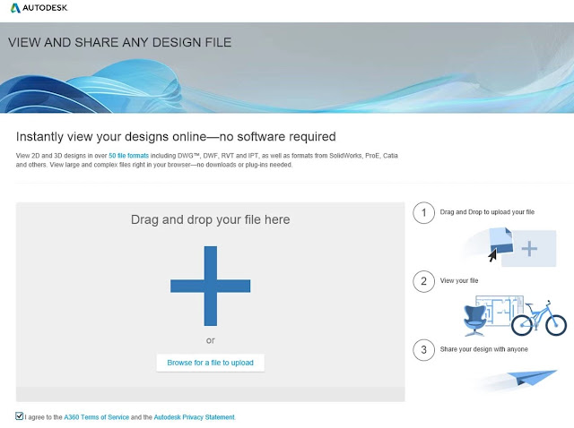
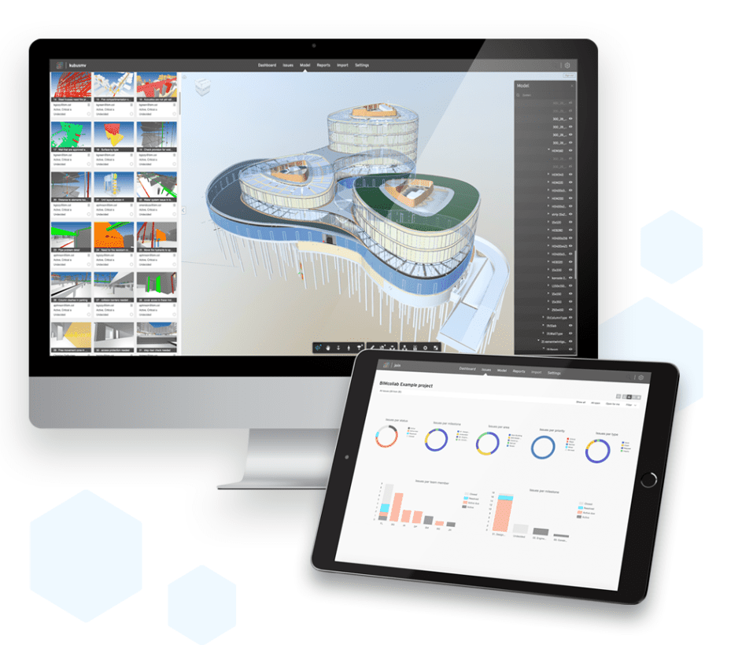
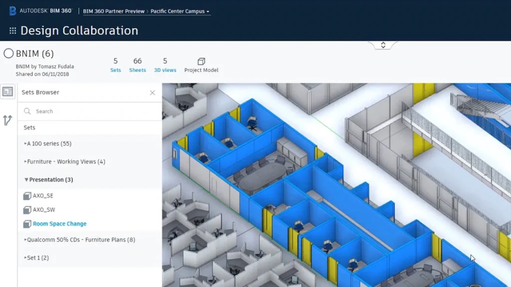
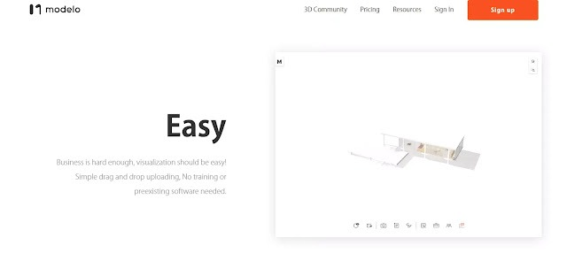
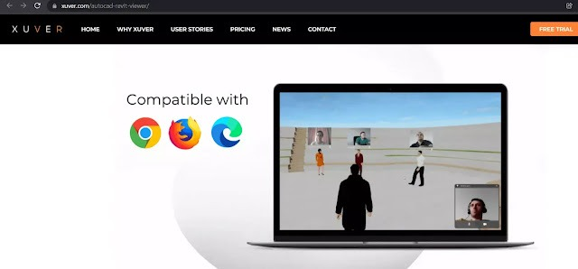
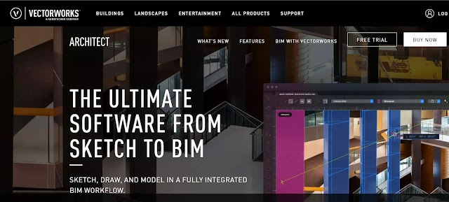

Inside a Data Center
A visual guide to understanding, designing, and speaking the language of data centers. Free 9-page preview, no strings attached.
Get the free previewViewer for Revit Files : Why?
Autodesk Revit is a BIM software that offers a lot of BIM features and of them is BIM Modeling.
Particularly, Revit deals with the modeling and collaboration aspects of BIM, which allows architects, engineers, and construction specialists to collaborate and work together in creating and planning building designs in a digital environment.
So, being able to share and make Autodesk Revit models accessible to other users like stakeholders, team members, and clients is important.
But for some clients who don’t use Revit find it difficult to visualize the 3D Model of the building. This is why Finding a Revit viewer is essential.
The best BIM RVT and RFA Viewer?
In fact, We’ve gathered a full list of 7 options that will help you view Revit files online or offline.
Some of them are other BIM programs, as stakeholders or team members might be able to use these softwares if they don’t have Revit themselves. In researching all the available options, we believed that this list is the best:
1-Autodesk Viewer
Autodesk has now released a fantastic new file viewer, it is free, takes over 50 file-formats including Revit, and needs no software.
It is an online-based viewer with an easy drag and drop interface, you can find it here:
{kind=link}

2-BIMcollab
BIMcollab Cloud is an easy-to-use and powerful issue management platform in the cloud. Issues are directly linked to positions and objects in your BIM model. They are accessible via web browsers or directly from your BIM software. Imagine clicking an issue in your own BIM tool and being zoomed to its position in your model. You’ll have all the information where it’s needed to lookup, create and solve issues.
Connect your favorite BIM tools, like Navisworks, Revit, Solibri, ARCHICAD and Tekla. Access your models via CDE integrations like Autodesk Docs, Trimble Connect, Dropbox Business and more to come. Advanced reporting? Connect Microsoft Power BI and build extensive custom reports for all your stakeholders and partners.

3-BIM 360
BIM 360 is an Autodesk cloud-based solution that allows project teams to effectively work in a collaborative environment. In the AEC industry, it connects all project stakeholders to execute projects from conceptual design through construction and ultimately project turnover.
There are two ways for sharing and viewing Revit files with BIM 360 software tools.
The first is a BIM 360 add-in app for Revit, that allows users to transfer models over a cloud-based BIM management and coordination software.
Or the other option is through BIM Collaborate Pro, which is a design collaboration and coordination tool. This software has a Revit Cloud Worksharing feature that permits collaboration on Revit models. But all collaborators must have a BIM 360 Docs account.

4-Navisworks
Navisworks is project review software that allows for a variety of model review features, such as combining design data into one shared model, measurement tools.
Moreover, by using this software, users can also create synchronized views of projects along with data. Since it’s an Autodesk product, it coordinates with other BIM software, including Revit.

5-Modelo: Viewer for Revit files Online
Modelo is a website for viewing, publishing, and sharing Revit files. There are a lot of convenient features that come with this amazing tool. Modelo allows you to efficiently display 3D models on the web and view them on any browser or any device.
You can upload an unlimited number of Revit models from your software or your browser and embed them directly on any site you want.

6-Xuver: Viewer for Revit files Online
Xuver is an online viewing service outside of the Autodesk ecosystem that allows for the sharing of Revit models through a secure HTML link. It also provides features to make the sharing more interactive, including real-time presentation mode, section manipulation, and VR viewing.
A free downloadable plug-in quickly converts your Revit file to a .xr file format, which can be viewed through the Xuver viewer.

7-Vectorworks
Vectorworks is a non-Autodesk BIM software product that can import RVT or RFA files (versions 2011-2020). It uses a workflow that’s similar to the Revit environment and has the capability to allow for direct planning, design, and documentation of a project.
What is Vectorworks ? Exceptional design demands exceptional tools — a platform built to deliver absolute creative expression and maximum efficiency. At Vectorworks, we believe your design software should offer the freedom to follow your imagination wherever it may lead you, to seamlessly share your vision at any phase, and to easily interpret the information needed to make the smartest decisions every time.

I hope that you found this article useful and helpful in your research, if so, Share it with others and help our AEC Community! And if you have feedback and reviews about this Post please comment below or contact us, you’re welcome.